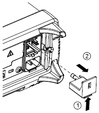
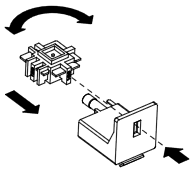
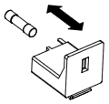
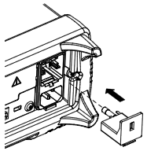
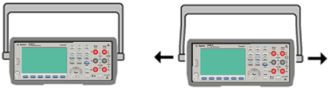
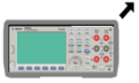
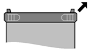
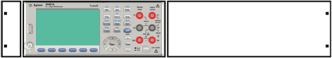
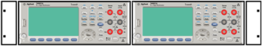

Quick Start
This section describes basic procedures to help you get started quickly with the instrument.
Prepare Instrument for Use
Verify that you received the following items. If anything is missing, please contact your nearest Keysight sales office or Keysight authorized reseller.
- Power cord (for country of destination)
- Certificate of Calibration (optional)
- Keysight Automation-Ready CD (Keysight IO Libraries Suite) (optional on 34460A)
- Supplemental documentation packet
- USB 2.0 cable (optional on 34460A)
The latest product documentation is available at www.keysight.com/find/truevolt-doc. For documentation for mobile devices, see www.keysight.com/find/truevolt-mobilehelp.
To download the Digital Multimeter Connectivity Utility, go to www.keysight.com/find/DMMutilitysoftware.
Setting the AC Mains Line Voltage Selector and Fuse Installation

|
Before plugging the instrument into AC mains power, verify that the line voltage setting visible on the back of the AC mains input module is correct for the AC mains power source being connected. The line voltage selections are shown in a box on the rear panel immediately to the left of the AC mains input module. Other nominal line voltages are shown in parentheses.
Verify that the correct fuse is installed. To replace a blown fuse or verify the correct fuse,
pull it gently from the fuse drawer and insert the correct working fuse. Use only a 5x20 mm,
time-lag, 0.25 A, 250 V certified fuse. The Keysight part number is 2110-0817.

| 100 - 115 |
100 |
| 120 - 127 |
120 |
| 202 - 230 |
220 |
| 240 |
240 |
|
Use the following procedure to configure the line voltage selector:
| Step 1 |
Lift tab (1) and pull the fuse drawer (2) from the rear panel. |

|
| Step 2 |
Remove the line-voltage selector and rotate it so the correct voltage will appear in the fuse holder window. |

|
| Step 3 |
Verify that the correct fuse is installed. To replace a blown fuse or verify the correct fuse,
pull it gently from the fuse drawer and insert the correct working fuse. Use only a 5x20 mm,
time-lag, 0.25 A, 250 V certified fuse. The Keysight part number is 2110-0817.
|

|
| Step 4 |
Replace the fuse holder assembly by sliding it into the rear panel.
|

|
|
|
Product Grounding
The instrument is a Class 1 product and is provided with a grounding-type power cord set. The instrument chassis and cover are connected to the instrument electrical ground to minimize shock hazard. The ground pin of the cord set plug must be firmly connected to the electrical ground (safety ground) terminal at the power outlet. Any interruption of the protective earth (grounding) conductor or disconnection of the protective earth terminal will cause a potential shock hazard that could result in personal injury or death.
|
Connect Power and I/O Cables
Connect the power cord and LAN, GPIB, or USB cable as desired. After you turn on the instrument (as described below), the instrument will run a power-on self test and then display a message about how to obtain help, along with the current IP address. It also displays the GPIB address (if applicable).
The instrument's default measurement function is DC Voltage (DCV), with autoranging enabled.
Press the power switch in the lower left corner of the front panel. If the instrument does not turn on, verify that the power cord is firmly connected and that the fuse is good and the line voltage selector is set correctly, as described above. Also make sure that the instrument is connected to an energized power source. If the LED below the power switch is off, there is no AC mains power connected. If the LED is amber, the instrument is in standby mode with AC mains power connected, and if it is green, the instrument is on.

|
In certain circumstances, the amber LED can come on even if the wrong line voltage is selected. In this case, the instrument may not power on. |
If the power-on self test fails, the display shows Error in the upper right corner. It also displays a message describing the error. See SCPI Error Messages for information on error codes. See Service and Repair - Introduction for instructions on returning the instrument for service.
To turn off the instrument, press and hold the power switch for about 500 ms. This prevents you from accidentally turning off the instrument by brushing against the power switch.
|
|
If you turn off the instrument by disconnecting power (this is not recommended), the instrument turns on as soon as you re-apply power. You will not need to press the power switch. |
Adjust the Carrying Handle
The handle has three positions, shown below.

To adjust the handle position, grasp the sides of the handle, pull outward, and rotate the handle.

Use Built-in Help System
The built-in help system provides context-sensitive help on any front panel key or menu softkey. A list of help topics is also available to help you learn about the instrument.
View the help information for a front panel key
Press and hold any softkey or button, such as [Display].
If the message contains more information than will fit on the display, press the down arrow softkey to scroll down.

Press Done to exit Help.
View the list of help topics and use interactive demos
Press to view the list of help topics. Press the arrow softkeys or use the front panel arrow keys to highlight the desired topic. Then press Select. You can also press Demos to run interactive demos on how to use the instrument.

In this case, the following help topic appears:

View the list of recent instrument errors.
Press and choose View instrument errors from the list of help topics. This displays the instrument's error queue, which includes up to 20 errors.
View the help information for displayed messages.
Whenever a limit is exceeded or any other invalid configuration is found, the instrument displays a message. The built-in help system provides additional information on the most recent message. Press [Shift] > [Help], select View the last message displayed, and press Select.

Press Done to exit Help.
|
|
Local Language Help
All messages, context-sensitive help, and help topics are available in English, Chinese, French, German, Japanese, Korean, and Russian. To select the local language, press [Utility] > System Setup > User Settings > Help Lang. Then select the desired language.
The menu softkey labels and status line messages are not translated.
|
Rack Mount the Instrument
You can mount the instrument in a standard 19-inch rack cabinet using one of two optional kits, each of which includes instructions and mounting hardware. You may also mount Another Keysight System II instrument of the same height and width beside the instrument.

|
To prevent overheating, do not block airflow to or from the instrument. Allow enough clearance at the rear, sides, and bottom of the instrument to permit adequate internal air flow.
|
|
|
Remove the carrying handle and the front and rear bumpers before rack-mounting the instrument.
|
Removing the Handle and Bumpers
To remove the handle, rotate it to vertical and pull the ends outward.
To remove the rubber bumper, stretch a corner and then slide it off.
|

|

|
| Front |
Rear (bottom view) |
Rack Mounting a Single Instrument
To rack mount a single instrument, order adapter kit 5063-9240.

Rack Mounting Instruments Side-by-Side
To rack mount two instruments side-by-side, order lock-link kit 5061- 8769 and flange kit 5063-9212. Be sure to use the support rails in the rack cabinet.

Sliding Support Shelf
To install one or two instruments in a sliding support shelf, order shelf 5063-9255 and slide kit 1494-0015. For a single instrument, also order filler panel 5002-3999.